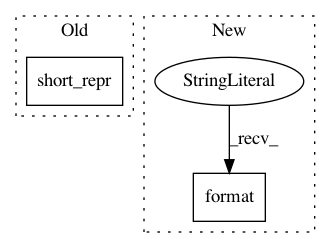

dd5dd1abff53aa57db42b0a1777c3971eb094f9e,sos/target.py,RuntimeInfo,__init__,#RuntimeInfo#Any#Any#Any#Any#Any#Any#,374
Before Change
if not self.lock.acquire(blocking=False):
raise UnavailableLock((self.output_files, self.proc_info))
else:
env.logger.trace("Lock acquired for output files {}".format(short_repr(self.output_files)))
def __getstate__(self):
self.release()
After Change
self.signature_vars = signature_vars
self.proc_info = os.path.join(os.path.expanduser("~"), ".sos", ".runtime", "{}.exe_info".format(
textMD5("{} {} {} {}".format(self.script, self.input_files, output_files, self.dependent_files))))
self.lock()
In pattern: SUPERPATTERN
Frequency: 3
Non-data size: 2
Instances
Project Name: vatlab/SoS
Commit Name: dd5dd1abff53aa57db42b0a1777c3971eb094f9e
Time: 2017-02-13
Author: ben.bog@gmail.com
File Name: sos/target.py
Class Name: RuntimeInfo
Method Name: __init__
Project Name: vatlab/SoS
Commit Name: e090bc078395efd951814089e6997ff661f7f729
Time: 2017-05-16
Author: ben.bog@gmail.com
File Name: sos/__main__.py
Class Name:
Method Name: workflow_status
Project Name: vatlab/SoS
Commit Name: dd5dd1abff53aa57db42b0a1777c3971eb094f9e
Time: 2017-02-13
Author: ben.bog@gmail.com
File Name: sos/target.py
Class Name: RuntimeInfo
Method Name: __setstate__